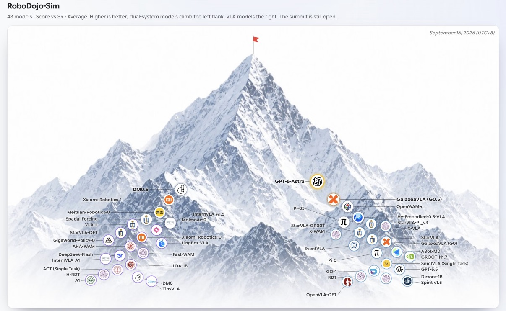
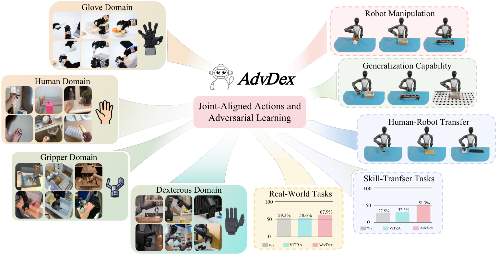
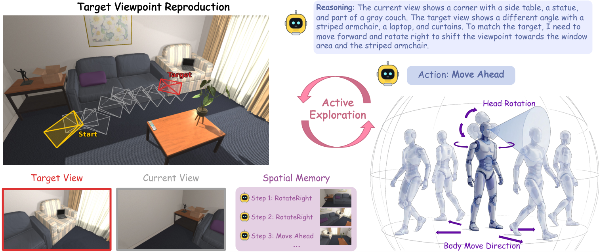
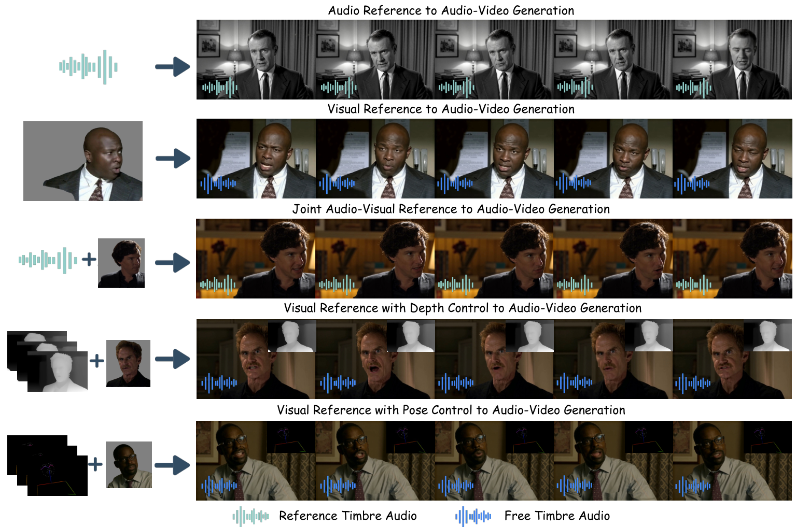

Liyang Li 李力扬
I'm a second-year Ph.D. student at the State Key Lab of CAD & CG, Zhejiang University, advised by Chunhua Shen and Hao Chen.
My research interests lie in World Model and Robot Learning.
News
- We evaluate GPT-6 Astra as a robot policy on RoboDojo and beyond.
- AdvDex is accepted to CoRL 2026.
- MMControl is accepted to ECCV 2026.
- Introducing TVRBench: active exploration toward a target viewpoint.
Research



Misc
Honors & Awards
- Zhejiang Provincial Government Scholarship
- First-Class Scholarship, Zhejiang University